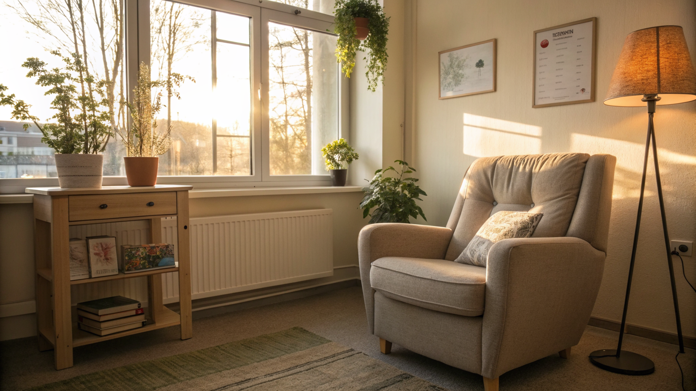

Come SiteEngine Pro Trasforma i Siti Web di Psicologi, Medici e Liberi Professionisti in Strumenti di Prenotazione Organica Efficaci

Rivoluzione Digitale per Psicologi, Medici, Avvocati e Liberi Professionisti: Ottimizzare il Sito Web con SiteEngine Pro
- I siti vetrina tradizionali sono costosi e poco performanti in termini di prenotazioni organiche.
- La complessità nella gestione e l'assenza di strategie di marketing digitale limitano la crescita dei professionisti.
- SiteEngine Pro propone landing page studiate con trigger cognitivi, SEO evoluto e integrazione semplice con strumenti come Google Map e blog, a un costo unico accessibile.
Analisi Approfondita della Notizia e delle Implicazioni Operative
Il panorama digitale per professionisti come psicologi, medici, avvocati e terapeuti si presenta sempre più complesso e competitivo. Secondo recenti ricerche di settore, gran parte dei professionisti investe cifre elevate per la realizzazione di siti web cosiddetti "vetrina", pensati più come biglietti da visita online che come strumenti realmente funzionali alla generazione di appuntamenti e alla fidelizzazione del cliente.
Questi siti, spesso costruiti con soluzioni generiche o con agenzie poco specializzate sul target del libero professionista, non rispondono alle esigenze operative reali: mancano elementi persuasivi che influenzano il comportamento del visitatore, non implementano meccanismi di prenotazione diretta con facilità e mancano di un'efficace ottimizzazione SEO, elemento chiave per attrarre tramite ricerca organica un bacino di clienti realmente interessati.
L'implicazione sul business è evidente e duplice: da un lato, si spende molto in strutture digitali che non portano un ritorno tangibile; dall'altro, si perde competitività rispetto a realtà che adottano strategie digitali più avanzate e flessibili.
Le Conseguenze e i Costi di Non Agire
I principali problemi operativi emergenti da una gestione tradizionale dei siti web per professionisti sono tre: alti costi di realizzazione e gestione, inefficacia nel convertire visite in prenotazioni e complessità tecnica e gestionale non sostenibile per chi non è esperto di digitale.
Questi elementi si traducono in mancati guadagni e perdita di opportunità: un sito che non genera prenotazioni organiche significa dover affidare il business esclusivamente a fonti offline o a campagne sponsorizzate costose, spesso con risultati incerti nel medio-lungo termine.
Inoltre, la difficoltà di aggiornare i contenuti o integrare funzionalità avanzate senza consulenze esterne rappresenta un ulteriore freno operativo, che rallenta l’adattamento della presenza digitale alle nuove esigenze di mercato e alle tendenze del comportamento dei potenziali clienti.
Come SiteEngine Pro Risolve il Problema
SiteEngine Pro, la soluzione SaaS di RM Studio, risponde in modo specifico e mirato a queste criticità, semplificando la vita digitale ai professionisti e garantendo risultati tangibili.
Con nove template di landing page d’autore progettati con trigger cognitivi studiati per aumentare le conversioni, SiteEngine Pro consente di realizzare siti non solo esteticamente eleganti ma soprattutto efficaci nel generare prenotazioni. Ogni template è ottimizzato per guidare il visitatore verso l'appuntamento, sfruttando leve psicologiche e di persuasione validati dalla ricerca applicata.
La funzionalità di integrazione con Google Map permette inoltre di aumentare la visibilità locale e permettere ai clienti di individuare facilmente lo studio, favorendo l’engagement offline.
Dal punto di vista SEO, SiteEngine Pro utilizza dati strutturati JSON-LD e altre best practice per migliorare il posizionamento organico sui motori di ricerca, creando un ciclo virtuoso tra visita e conversione. Un sistema di “magic link” per il blog aiuta i professionisti a integrare contenuti autorevoli e aggiornati, aumentandone l’autorità e l’interesse per i potenziali clienti.
Infine, SiteEngine Pro sostiene l'utente con una gestione intuitiva e centralizzata, evitando la necessità di continue consulenze esterne e migliaia di euro annuali in costi di manutenzione.
| Aspetti | Gestione Tradizionale | Con SiteEngine Pro |
|---|---|---|
| Costi Realizzazione | Molto alti, spesso ricorrenti | Unico pagamento €400 con hosting e dominio per 1 anno |
| Ottimizzazione SEO | Limitata o assente | SEO evoluto con dati strutturati JSON-LD |
| Gestione e Aggiornamenti | Gestione complessa e costosa | Interfaccia semplice e autonoma |
| Funzionalità di Prenotazione | Assente o integrata con sistemi esterni difficili | Landing page con trigger cognitivi per conversioni |
| Integrazione Local SEO | Assente o implementata parzialmente | Google Map integrata per visibilità locale |
💡 Ti è stato utile questo approfondimento?
Condividilo con un collega o un amico del settore Psicologi, Medici, Avvocati, Terapeuti e Liberi Professionisti a cui potrebbe interessare!
FAQ - Domande Frequenti per Psicologi, Medici, Avvocati e Liberi Professionisti
1. Quanto tempo richiede mettere online un sito con SiteEngine Pro?
Grazie ai template predefiniti e all’interfaccia user-friendly, un sito completo e funzionale può essere realizzato anche in poche ore, senza necessità di competenze tecniche specifiche.
2. È possibile personalizzare le landing page offerte da SiteEngine Pro?
Sì, i 9 template sono progettati per essere altamente personalizzabili, includendo elementi visivi e contenutistici che si possono adattare alle esigenze e allo stile professionale di ciascun libero professionista.
3. Come funziona l’ottimizzazione SEO con JSON-LD in SiteEngine Pro?
SiteEngine Pro integra dati strutturati JSON-LD per segnalare ai motori di ricerca informazioni precise su servizi, ubicazione e professionalità, aumentando la visibilità organica e facilitando la comparsa in risultati di ricerca mirati.
Inizia Subito
Sblocco sito definitivo a €400 una tantum con dominio e hosting inclusi per il 1° anno.
Fonti Ufficiali e Risorse Esterne
Scopri l'Intelligenza Artificiale per la tua attività
Ottimizza i processi e aumenta le vendite con le soluzioni B2B di RM Studio.
Scopri SiteEngine Pro